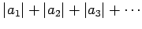

Inhalt Index DeskTop Bronstein

 Funktionentheorie Potenzreihenentwicklung analytischer Funktionen Konvergenz von Reihen mit komplexen Gliedern
Funktionentheorie Potenzreihenentwicklung analytischer Funktionen Konvergenz von Reihen mit komplexen Gliedern


Eine Reihe mit komplexen Gliedern an konvergiert gegen eine Zahl  , die Summe der Reihe, wenn gilt
, die Summe der Reihe, wenn gilt
| (14.44) |
Verbindet man die Punkte, die durch die Zahlen in der z-Ebene gegeben sind, durch einen Polygonzug miteinander, dann bedeutet Konvergenz der Reihe die Annäherung des Polygonzugendes an die Zahl  .
.
| Beispiel A |
|
|
| Beispiel B |
|
(s. Abbildung). |
Man spricht von absoluter Konvergenz (s. Beispiel B), wenn auch die Reihe der Absolutbeträge ihrer Glieder  konvergiert, von bedingter Konvergenz (s. Beispiel A), wenn die Reihe konvergiert, die Reihe ihrer Absolutglieder jedoch divergiert.
Wenn die Glieder einer Reihe gemäß
| (14.45) |
variable Funktionen fi(z) sind, dann wird durch die Reihe für die z-Werte eine Funktion von z definiert, für die die Reihe konvergiert.